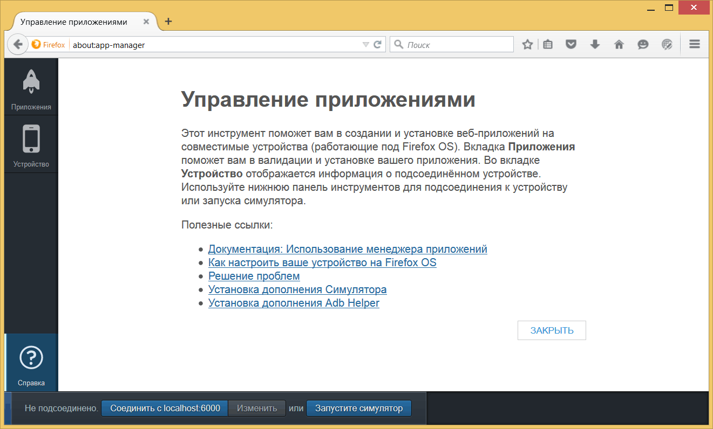
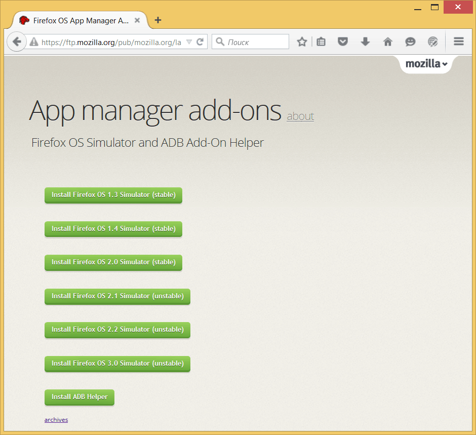
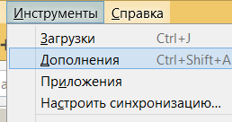
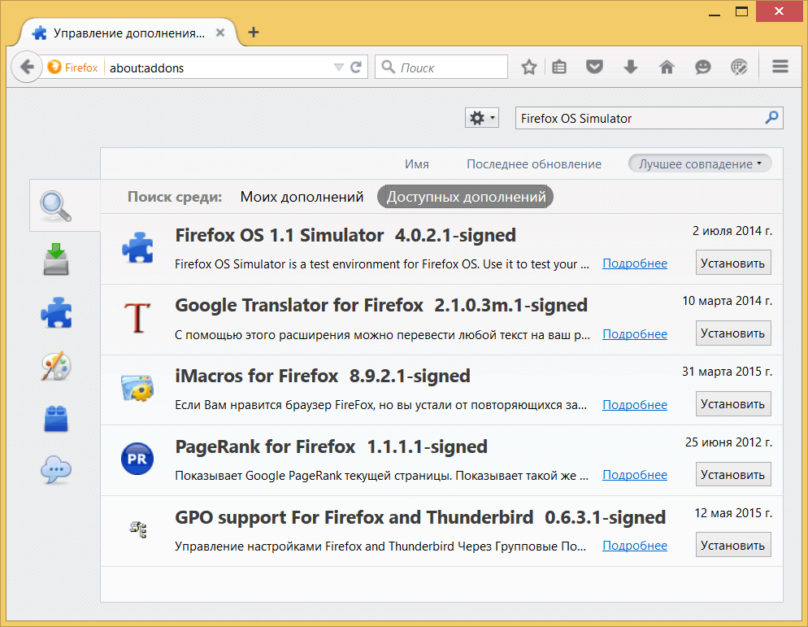

Настройки для разработки приложения на Firefox OS
Движок Gecko
Браузеры используют различные движки для отображения веб-страниц: Google Chrome и Opera используют Blink (ответвление WebKit), Internet Explorer использует Trident, а Safari использует WebKit. У Mozilla есть свой собственный движок называемый Gecko, который применяется в Firefox для десктопа, Firefox для Android и Firefox OS. Поскольку эти продукты используют одинаковый движок, то возможна разработка для Firefox OS с помощью браузера Firefox для настольных компьютеров (но с некоторыми оговорками).
Какие программы вам нужны?
Для разработки и тестирования приложений сделанных для Firefox OS вам понадобится:
- последняя версия браузера Firefox.
- Firefox OS Simulator если вы работаете с устройством под управлением Firefox OS 1.1.
- текстовый редактор для программирования.
Помните, что Firefox OS Simulator сделан для работы с устройствами под управлением Firefox OS от 1.0 до 1.1. Устройства под управлением Firefox OS 1.2+ будем тестировать с помощью Менеджера приложений, о котором поговорим позже.
Поскольку множество людей работает с Firefox OS 1.1 и большинство устройств, продаваемых в магазинах по прежнему на версии 1.1, мы оставим инструкции по Firefox OS 1.1 Simulator, но также представим, как выполнить те же задачи в Менеджере приложений. Я представлю Менеджер приложений первым, потому что он современнее, а затем расскажу о старом симуляторе.
Менеджер приложений идёт в комплекте с Firefox 29 или новее. Подробнее он описан в соответствующей главе.
Настройка Менеджера приложений
Если вы работаете в текущей версии Firefox (29 или новее), тогда для вас доступен Менеджер приложений. Одного Менеджера не достаточно, поэтому вам по-прежнему необходимо установить симуляторы, чтобы была возможность проверять всякие штуки без подключения устройства к вашей машине. У Mozilla есть обширная документация о Менеджере приложений, так что посмотрите её, если хотите узнать всё подробнее.
Менеджер приложений может управлять несколькими версиями Firefox OS, поэтому вы можете установить симуляторы для версии 1.3, 1.4 и 2.0. Помните, что чем ниже номер версии, тем раньше она вышла. И я имею в виду баги, но так как у нас может быть несколько версий, то мы просто должны установить их все, чтобы была возможность тестировать наши приложения в различных версиях Firefox OS.
Возьмём Менеджер приложений и установим вещи, которые понадобятся нам в дальнейшем. Для запуска Менеджера приложений перейдите в меню Инструменты -> Веб-разработка -> Менеджер приложений.
Примечание редактора. В новых версиях Firefox нельзя вызвать Менеджер приложений через меню, потому что от него отказались в пользу WebIDE. Для открытия Менеджера наберите в адресной строке about:app-manager.
После запуска Менеджера приложений вы увидите подобный экран.

Справка по Менеджеру приложений
Вам надо нажать кнопку Установить Симулятор и выбрать желаемую версию для установки.
Менеджер приложений использует ADB для соединения с подключенными устройствами. Он способен обрабатывать все ADB, если вы установите Adb Helper через Установка дополнения Adb Helper.
Советую установить все доступные версии симулятора и Adb Helper.

Страница для загрузки симулятора и Adb Helper
Установка Firefox OS Simulator
Если у вас есть устройство под управлением Firefox OS 1.1, то вы должны установить Firefox OS 1.1 Simulator, потому что ваше устройство не может общаться с новым Менеджером приложений.
После установки Firefox следующим шагом является установка Firefox OS Simulator, который будет использоваться для тестирования наших приложений. После установки и запуска Firefox перейдите в меню Инструменты и выберите Дополнения.

Меню с выбранным пунктом Дополнения
Используя строку поиска в правом верхнем углу найдите Firefox OS Simulator и включите дополнение, нажав кнопку установки.

Менеджер дополнений показывает симулятор
Внимание! Если вы работаете с Firefox 29 или новее и у вас есть устройство на Firefox OS 1.1 или выше, то вам понадобится ещё один вариант Firefox OS 1.1 Simulator, который в настоящее время не представлен в списке дополнений. Эта бета-версия, но это лучшее что сейчас есть. Вы можете получить его для Mac OS X, Linux или Windows. Просто перетащите XPI-файл в Firefox и следуйте инструкциям по установке. Если вы хотите следить за квестом как сделать работающим Firefox OS 1.1 Simulator в Firefox 29, то проверьте баг № 1001590.
После установки дополнения вы сможете получить доступ к симулятору через меню .

Где можно найти симулятор после его установки
Кроме того, вы можете перейти на страницу дополнения Firefox OS Simulator и скачать его оттуда.
Резюме
В этой главе мы узнали, что всё необходимое для разработки приложений на Firefox OS — это браузер Firefox, Менеджер приложений и Firefox OS Simulator (а также хороший текстовый редактор).
Теперь мы настроили все необходимые инструменты и давайте перейдём к основным понятиям, прежде чем построим наше первое приложение.

Все материалы сайта доступны по лицензии Creative Commons «Attribution-NonCommercial» («Атрибуция — Некоммерческое использование») 4.0 Всемирная, если не указано иное.